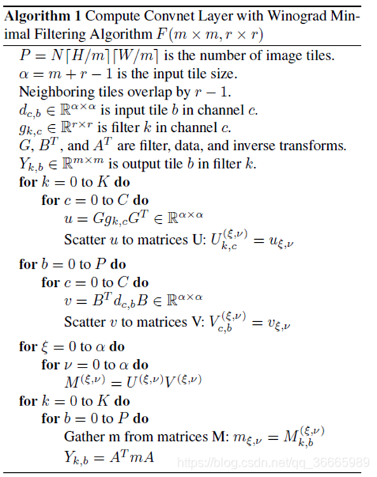
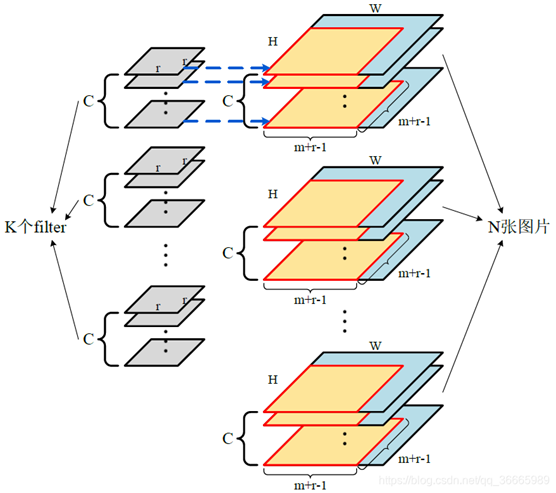
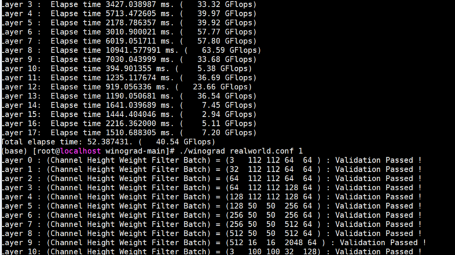

PAC24赛题简介¶
官方介绍链接：¶
赛题介绍：¶
赛题一:WINOGRAD优化:¶
[WINOGRAD简介]：¶
WINOGRAD是一种快速的卷积算法(备注1，2)。起源于1980年，是Shmuel Winograd提出用来减少FIR滤波器计算量的一个算法。通过增加加法操作来降低卷积算法中的乘法操作。若是采用直接按滑动窗口方式计算卷积，一维时需要𝑚×𝑟次乘法，二维时需要m×n×r×s次乘法。而采用WINOGRAD算法：其乘法数量减少到m+r−1或(m+r−1)(n+s−1)。远大于上面计算的最少乘法次数。从而提高性能。该算法自提出后，首先应用于人工智能相关领域。后来在传统的高性能计算中也被使用。
WINOGRAD算法伪代码如下：
本赛题为1D的WINOGRAD算法。其Sample Code为2x3的实现。多线程版本。硬件平台华为鲲鹏920高性能芯片，单个芯片64个物理核。其指令集为ARM指令集。本赛题评判的是WINOGRAD在基于鲲鹏920高性能芯片的两路服务器上的性能 GFLOPS。具体规则如下。
[赛题要求]：¶
1.解压源码包后。文件包括:drive.c(主程序), winograd.c（2x3
WINOGRAD实现代码），small.conf(输入文件)
2.编译：修改Makefile文件中相关配置，make。
3.运行：./winograd <输入文件>0
输入文件：small.conf。
实际运行请务必提交到计算节点，具体脚本、运行方式请参考压缩包中demo及集群手册。
conf 文件格式：
第一行：N # N为测试样例个数
第二行: Channel Height Weight Filter Batch （参考备注3）
# Channel 数
# Height & Weight Image大小
# Filter数
# Batch 数
……
第N+1行：Channel Height Weight Filter Batch
卷积示意图：
输出结果实例：
4.校验：./winograd <输入文件> 1
输入文件：small.conf
5.算例说明：输入文件small.conf用于优化调试，可自由修改。组委会提前一天发布最终计入成绩的输入文件。
6.最终性能为测试代码输出的：“Total Elapse time”给出总体GFLOPS，GFLOPS越高越好。
7.编译仅允许使用组委会提供的毕昇编译器，鲲鹏KML数学库，HMPI库，其他编译器、数学库、MPI不可用。
8.文件修改：
Drive.c文件禁止修改。如果参赛队希望开发非2x3/3x2/3x3的卷积核。需要提前和组委会报备，经过容许才可以修改。即使修改也仅且限于以下内容。需要修改文件中native_conv函数中的dimKn，ingap，kngap，outgap定义。
函数：winograd_conv 中的 SizeF的值。
winograd.c: 该文件可以修改。
Makefile: 根据最终的编译器和编译选项修改。
9.可使用任意编译选项或链接优化选项，但禁止使用FDO/PGO反馈编译优化。10. 鼓励对于GEMM相关实现可以采用汇编代码或者底层Intrinsic函数。
10.容许采用多种并行方式，例如：MPI、OpenMP、Pthreads、MPI+多线程方式。
11.允许OS参数调优，比如内核参数，OS环境变量等。
12.最终提交源码、Makefile、编译环境、运行截图、运行性能，确保数据可复现。
13.本题满分为100分，在初赛上机成绩中占比50%。
14.本题的评分规则：
15.参赛队成绩 = 50（基础分）+ 50 *（参赛队性能 – 所有参赛队最低性能）/ （所有参赛队最高性能 – 所有参赛队最低性能）。
赛题二:基于新型算力评测标准CPU Bench的软硬协同优化:¶
[简介]：¶
CPUBench作为一款开放的通用计算CPU性能评测基准工具，其测试负载来源于HPC、大数据，数据库等常用通用计算领域的典型业务场景，定位于对通用计算场景下的CPU、内存子系统以及所依赖的编译器进行综合计算能力评估。
其中浮点型套件（FloatConcurrent）包含10个负载，设计制造、气象、基因、物理化学等典型科学计算领域，如下表所示：
[赛题要求]：¶
1.解压源码包后，修改config目录下的配置文件。
编译运行：
module use /scratch/apps/modulesmodule load java./cpubench.sh -c config-template.gcc10.ini -b FloatConcurrent --jobs $(nproc --all)
详细配置指导参考测试指导书
./cpubench.sh -h
实际运行请务必提交到计算节点，具体提交脚本、运行方式请参考压缩包中demo及集群手册。
2.比赛只允许修改配置文件，禁止修改工具源码。
3.调试过程可修改迭代次数、运行参数、指定负载等方式加快调试周期，结果提交需为运行3次的FloatConcurrent套件有效报告。
提示：原始基准完整运行需3小时，请合理安排优化时间。
4.不限编译器，可使用gcc、llvm、毕昇编译器等任意版本编译器。
5.可使用任意编译选项或链接优化选项，但禁止使用FDO/PGO反馈编译优化。
6.允许各负载使用不同的编译优化参数（即extreme模式），也可只使用typical模式，但最终提交需包含typical模式，否则报告无效。
7.允许使用第三方数学库、加速库、内存分配器等优化。
8.允许OS参数调优，比如内核参数，OS环境变量等。
9.最终提交一份测试报告(包括result目录的pdf、json、ini文件）和一份调优说明（详细描述该测试所使用的调优措施，确保数据可复现）
10.工具有效运行性能总分取FloatConcurrent套件的extreme/typical两种模式的较高分。
11.本题的评分规则：
参赛队成绩 = 50（基础分）+ 50 *（参赛队性能 – 所有参赛队最低性能）/ （所有参赛队最高性能 – 所有参赛队最低性能）。
12.本赛题仅用于PAC大赛，如有获取需求，请到“计算产品性能基准工作组”官方网站申请获取。
13.除本届PAC大赛参赛成员因解题需要外，不允许以任何方式进行再扩散、拷贝、分发。